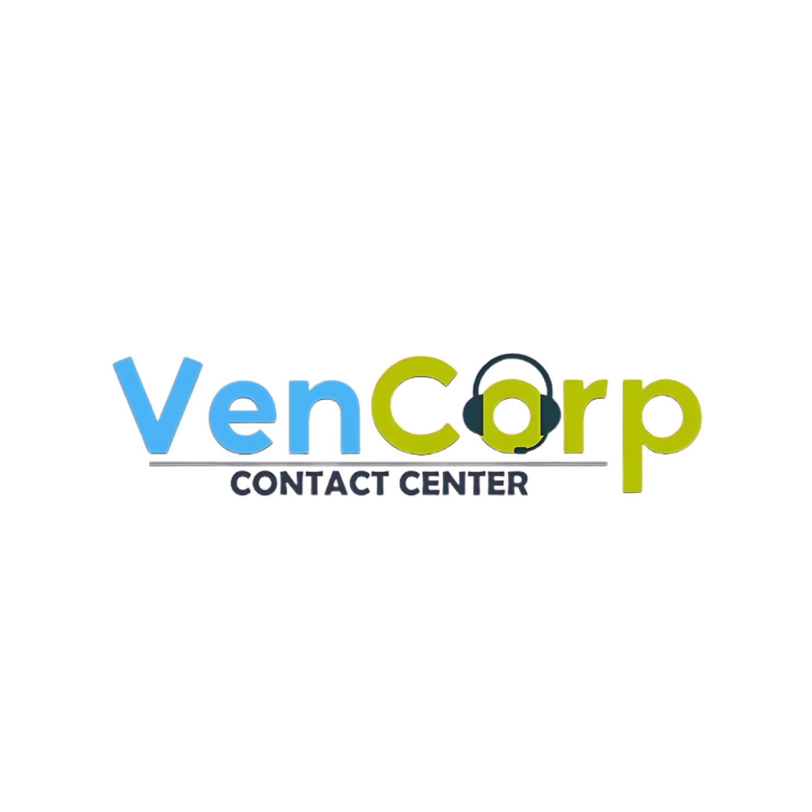
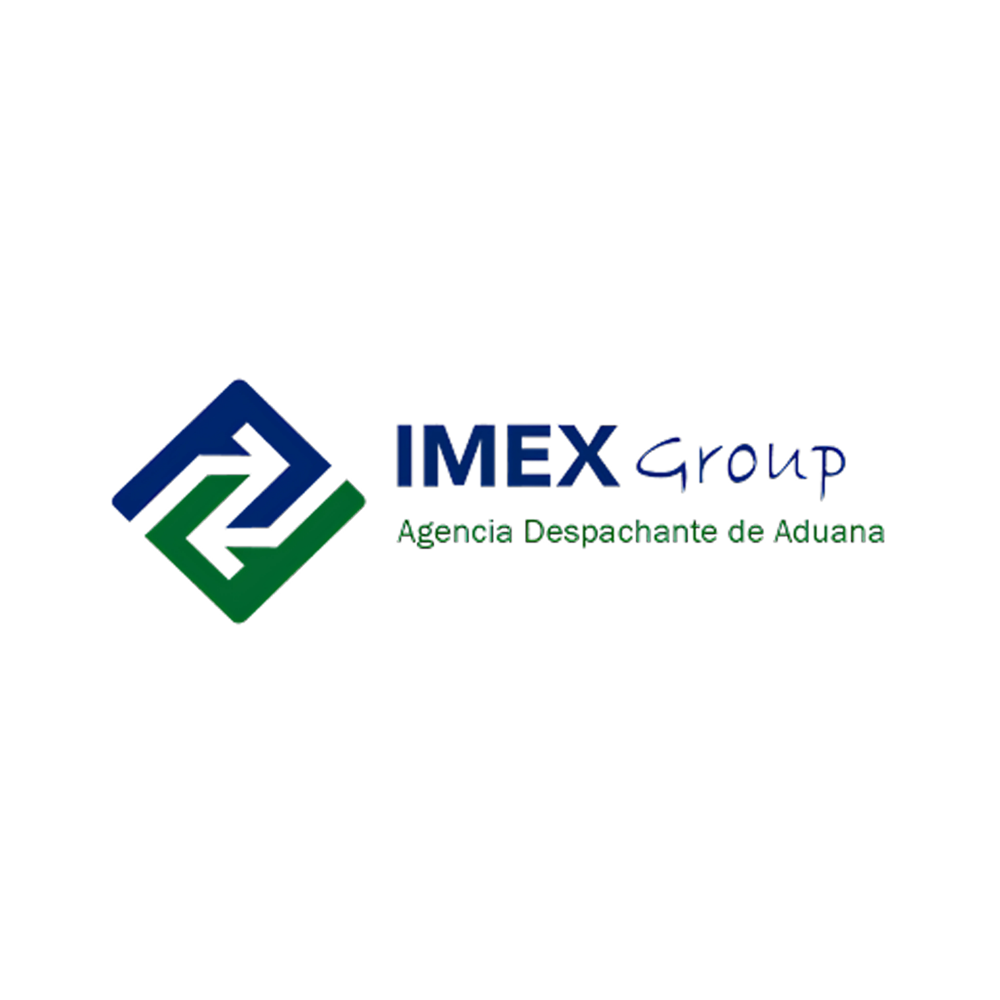
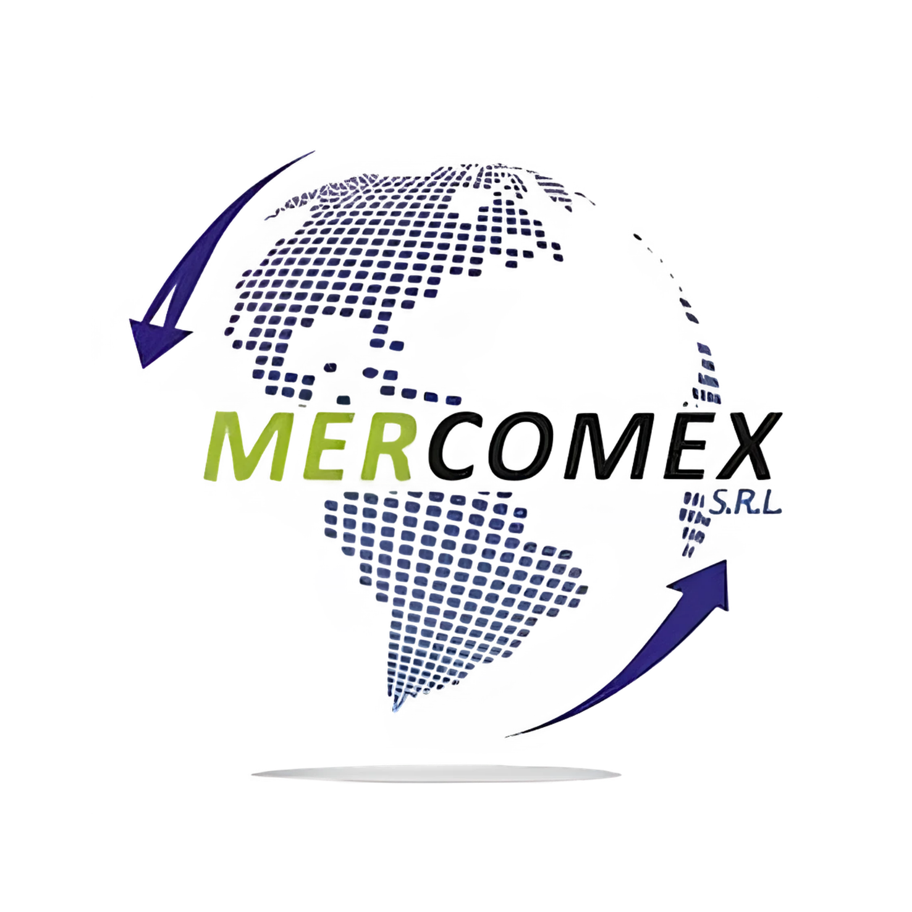
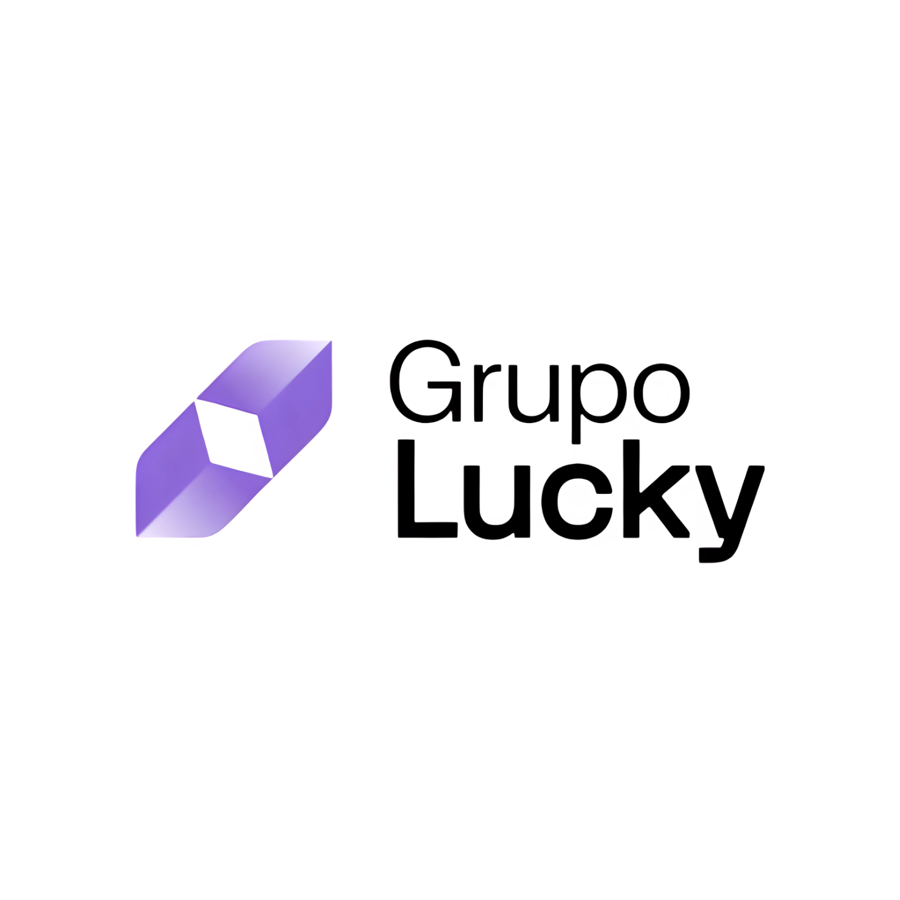
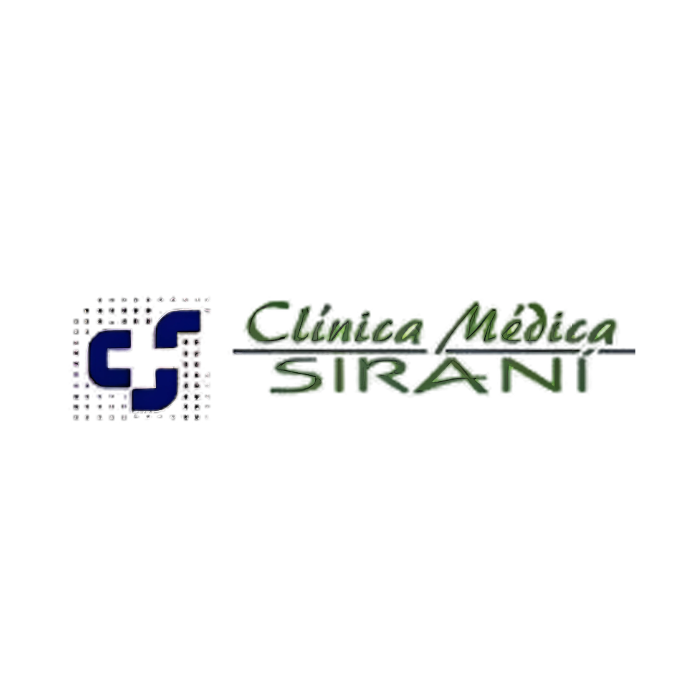
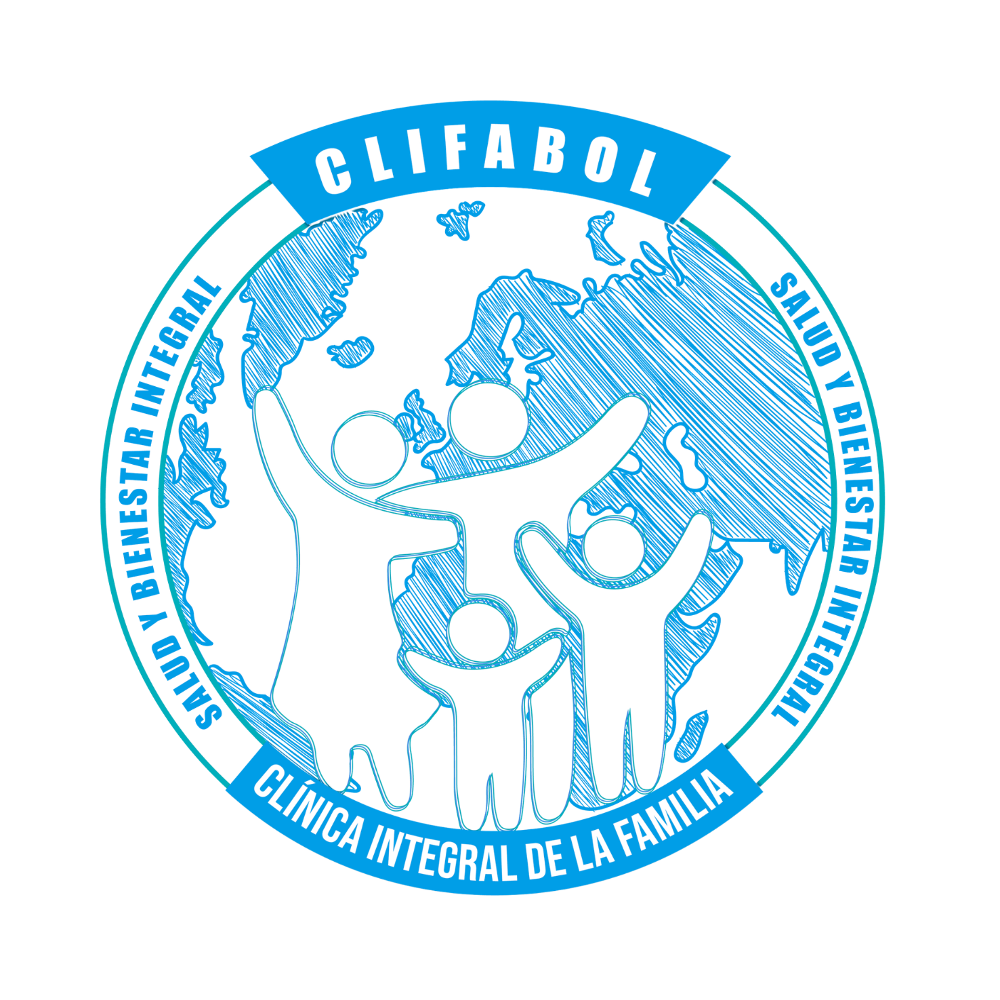
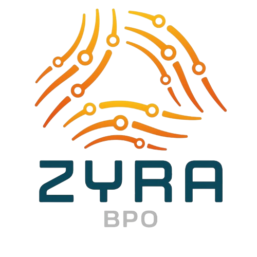

Proyectos Destacados
Casos de éxito e implementaciones reales en infraestructura, seguridad, conectividad, videovigilancia, telefonía IP, soporte y continuidad operativa.
Casos reales
Proyectos implementados para empresas de distintos rubros, con necesidades reales y resultados aplicados.
Tecnología aplicada
Infraestructura, redes, telefonía IP, data center, seguridad y soporte técnico empresarial.
Continuidad operativa
Soluciones pensadas para mejorar disponibilidad, control, seguridad y crecimiento empresarial.


Implementación orientada a operación de call center, con infraestructura de data center y configuración de troncal SIP para mejorar escalabilidad y automatización.


Implementación de controles y respaldos para reforzar trazabilidad, auditorías y continuidad operativa durante su proceso de certificación.


Implementación de un data center estable y escalable para soportar crecimiento, disponibilidad y procesos internos de certificación.


Integración de sedes en distintas ciudades con acceso seguro, más virtualización de servicios contables y telefonía para una operación unificada.

Fortalecimiento de la conectividad con protección frente a ataques externos y una experiencia de red más confiable para el personal.


Soporte técnico preventivo en computadoras y servidores para mejorar disponibilidad y reducir tiempos de inactividad.


Implementación de un call center moderno con IVR, derivación inteligente y mejor control de llamadas para una atención más eficiente.


Implementación de infraestructura escalable con data center y configuración de troncal SIP para soportar operación de atención al cliente.

Caso personalizado para mostrar implementación de IVR y modernización del sistema interno de videovigilancia.
Altecbol © 2026 // Success Cases